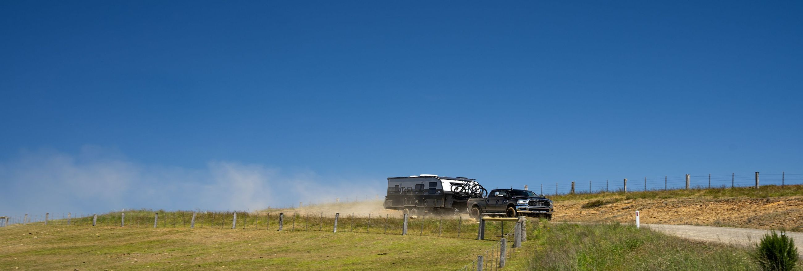
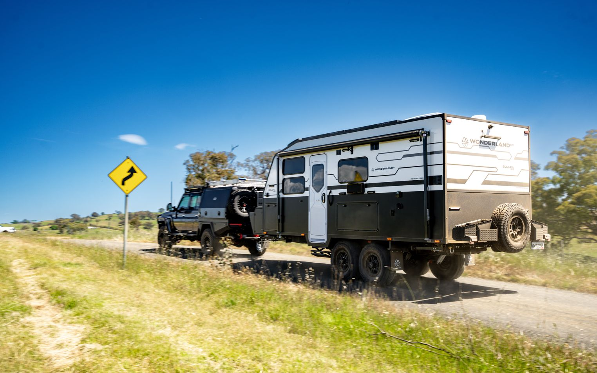

Unique Jigsaw construction for strength
and durability.
A caravan to suit your family and the trips
you want to take.
Impeccable, comfortable interiors that
offer a welcome retreat
3 year factory-backed warranty and
premium after sale service
